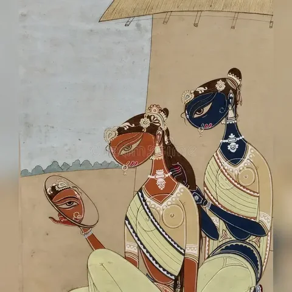

PEOPLE & CULTURE
Who lives in Bhagalpur, what language fills its streets, and how the city celebrates.
A growing riverside district
Bhagalpur district — the city plus its surrounding blocks and villages — is home to just over three million people according to the 2011 Census, making it one of the more densely populated districts in Bihar. The city itself, the district headquarters, is one of the largest urban centres in the state after Patna.
Figures from the 2011 Census of India — the most recent full count available for the district.
Angika, Hindi, and more
The everyday language of the streets is Angika — an Indo-Aryan language named for the old Anga region, written in the Devanagari script and spoken by well over half a million people across Bhagalpur, Munger, and Banka. Hindi is the official language of schooling and administration, Urdu holds official status too, and you'll hear Bengali, Maithili, and other neighbouring languages mixed in — Bhagalpur has long sat at a crossroads of Bihar, Bengal, and Jharkhand.
A multicultural homeland
Bhagalpur's population is majority Hindu with a sizeable Muslim community, and the city carries visible layers of both — from Sufi shrines and a centuries-old mosque near the Khanqah, to temples along the Ganga ghats, to Jain pilgrimage sites tied to the ancient Champanagari. Locals describe the district's own "Angika culture" as something built by absorbing and blending traditions from every direction it borders.
Village and riverside scenes
Away from the city centre, Bhagalpur district is still mostly rural — mango orchards, mustard fields, and villages strung along the Ganga, with peacocks a common sight in the countryside.

What the calendar looks like
- Kali Puja — one of the biggest festivals in the region, with Kali temples and puja pandals across the city and processions for the immersion (visarjan) that can run for well over a day.
- Bishahari Puja — devotion to the snake goddess Bishahari, marked by the Bihula-Bishahari story and the painted Manjusha boxes that go with it.
- Chhath Puja — like across Bihar, the Ganga ghats fill with worshippers offering prayers to the setting and rising sun.
- Kanwar Yatra season — pilgrims collecting Ganga water at Ajgaibinath Temple in nearby Sultanganj, en route to Deoghar, pass through the wider Bhagalpur region in huge numbers.